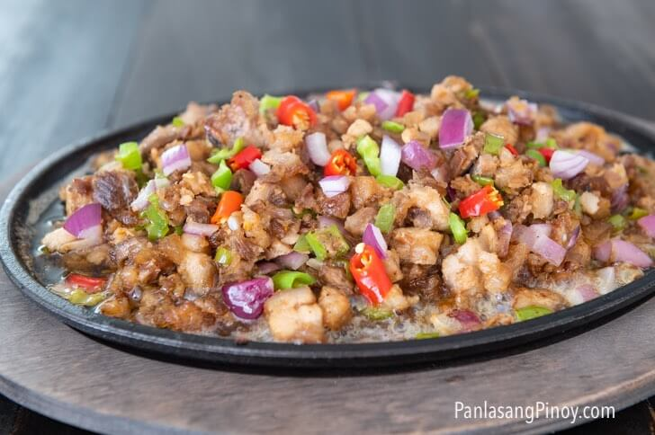

Sisig Recipe
Home

Sisig is a popular Filipino dish originating from Pampanga, typically made from chopped pork jowl, ears, belly, and chicken liver, seasoned with calamansi, onions, and chili peppers. Known for its savory, fatty, and tangy flavor, it is commonly served sizzling on a hot plate as a popular pulutan (beer snack) or main dish.
The Ingredients:
- 250g Pork belly
- Onion
- Garlic
- 1 large egg
- Green Chili
- Red Chili
- Mayonnaise
How to Cook Sisig:
- Saute pork liempo until brown. Remove after it is cooked
- Saute chopped garlic, onions. And half of your chopped chilis, we want to leave some uncooked ones for more spicier, crunchy toppings
- Add the toasted pork belly
- (Optional) Transfer the cooked ingredients to a hotplate
- Drizzle mayonnaise on top
- Add the uncooked chilis for additional toppings
- Add one large egg and let it cook on top of the hotplate
- Drizzle mayonnaise on top
- Mix and enjoy!